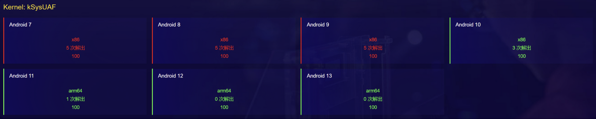

GeekCon AVSS 2023 Qualifier - kSysUAF

附件：KV3.tar.gz
漏洞分析
在新创建的602号系统调用中，存在一个UAF漏洞
1 |
|
这个UAF的特点：
具备 UAF 读和写的双重能力（但只能读写前256字节，那后面128字节有什么用呢？）
1
2
3
4
5
6
7
8
9
10
11
12
13noinline void show_buffer(char __user * addr, unsigned long len, unsigned int idx) {
if (gst1[idx]) {
if (len <= BUFSZ)
my_ctu(gst1[idx]->name, addr, len);
}
}
noinline void edit_buffer(char __user * addr, unsigned long len, unsigned int idx) {
if (gst1[idx]) {
if (len <= BUFSZ)
my_cfu(gst1[idx]->name, addr, len);
}
}UAF的堆块大小为 256+128=384，在kmalloc-512中
1
2
3
4
5
6
7
8
9
10
11
12$ cat /proc/slabinfo
[...]
kmalloc-8192 16 16 8192 4 8 : tunables 0 0 0 : slabdata 4 4 0
kmalloc-4096 80 80 4096 8 8 : tunables 0 0 0 : slabdata 10 10 0
kmalloc-2048 136 136 2048 8 4 : tunables 0 0 0 : slabdata 17 17 0
kmalloc-1024 255 264 1024 8 2 : tunables 0 0 0 : slabdata 33 33 0
kmalloc-512 411 432 512 8 1 : tunables 0 0 0 : slabdata 54 54 0
kmalloc-256 1986 2352 256 16 1 : tunables 0 0 0 : slabdata 147 147 0
kmalloc-192 1323 1323 192 21 1 : tunables 0 0 0 : slabdata 63 63 0
kmalloc-128 2816 2816 128 32 1 : tunables 0 0 0 : slabdata 88 88 0
kmalloc-64 17383 18816 64 64 1 : tunables 0 0 0 : slabdata 294 294 0
[...]
漏洞利用
android 7/8/9：
- 使用iovec（pipe readv）占住释放的堆块
- 利用UAF写改掉iovec中的地址
- 往管道中写入内容，就能达到任意地址写任意值的目的（到android 10上该方法不适用了）
- KSMA提权
android 10/11：
- 改freelist链表，实现任意地址写任意值
- 参考星盟安全的wp，构造任意地址读写原语，搜索init_task中task_struct链表来提权
比赛的时候忘了可以直接改freelist链表了，一直在找有哪个结构体大小可以满足kmalloc-512的。
android 7
内核版本：linux 3.10.0
exp如下
1 |
|
android 8
内核版本：linux 3.18.94
exp如下
1 |
|
android 9
内核版本：linux 3.18.94
exp如下
1 |
|
android 10
内核版本：linux 4.14.175
这个题竟然忘了最最基础的UAF的利用，不需要找目标大小的堆块，因为堆块内部的内容天然可以任意读写。那么直接改freelist链表，就能达到任意地址写。
1 | malloc -> free -> 改 -> malloc -> malloc |
此时，为了防止再次申请时系统崩溃，需要调整一下 kmalloc-512 空闲堆块指向的内容，使其指向一个合法堆块（通过free），并设置该堆块下一个指向为空（将堆块前8字节置0）。
结合 星盟安全的wp 思路：
有了一次任意地址写后，由于本题的特殊性，可以将伪造的堆块fake_heap指向bss段的 gst1（0xffffff8008e9bfb0），这样就可以通过
edit_buffer(xx, xx, 2) + show_buffer(xx, xx, 0)达到任意地址读，通过edit_buffer(xx, xx, 2) + edit_buffer(xx, xx, 0)达到任意地址写。从而构造出无数次任意地址读写（封装一个aaw和一个aar）。利用这一次任意地址写，写bss段的gst1，，然后遍历
init_task->tasks.next和比较各个task_struct->comm，寻找名字为 “exp” 的项（反向查找更快），对应就是当前进程 “exp” 的task_struct，从而获得当前进程的cred地址。覆写cred内容（或者覆写 task_struct->cred 为 init_cred），即可提权。
exp如下
1 |
|
android 11
内核版本：linux 5.4.50
当前版本内核中开启了freelist的两种保护措施
1 | CONFIG_SLAB_FREELIST_RANDOM=y # 多了一些操作，使申请新slab时，分配到的堆块顺序是随机的 |
确定free heap的排布规律
如果被分配的堆块是随机的那肯定不好办了，好在题目给的空间很大，我们可以申请释放多次，通过调试来找找规律。
代码如下，每五个堆块为一组，反复申请释放：
1 | // 0~4 |
以上逻辑执行完毕后，查看bss段gst1中堆块地址的规律：
1 | gef➤ x/20gx 0xFFFFFFC011A4DF78 |
可以看到，在打开了 CONFIG_SLAB_FREELIST_RANDOM 选项的情况下，第一次申请时，堆块地址不是依次递增的。但最后释放的堆块，依然是最先被分配出去，这点跟之前版本的情况一样。
再看 CONFIG_SLAB_FREELIST_HARDENED 对 free heap 的影响，gdb中调试结果如下：
1 | gef➤ x/2gx 0xffffff804ea6da00 |
free heap中存储的不是一个简单的地址了，而是一个奇怪的值，每个heap都不一样。这个奇怪的值是怎样计算得到的呢？
参考源码中的实现：
1
2
3
4
5
6
7
8
9
10
11
12
13
14
15
16
17
18
19
20
21
22
23
24
25
26
27
28
29
30
31
32
33
34
35
36
37
38
39
40
41
42
43
44
45
46
47
48
49
50
51
52
53
54
55
56
57
58
59
60
61
62
63
64
65
66
67void kfree(const void *objp)
{
struct kmem_cache *c;
[...]
__cache_free(c, (void *)objp, _RET_IP_);
local_irq_restore(flags);
}
static __always_inline void __cache_free(struct kmem_cache *cachep, void *objp,
unsigned long caller)
{
[...]
___cache_free(cachep, objp, caller);
}
void ___cache_free(struct kmem_cache *cache, void *x, unsigned long addr)
{
do_slab_free(cache, virt_to_head_page(x), x, NULL, 1, addr);
}
static __always_inline void do_slab_free(struct kmem_cache *s,
struct page *page, void *head, void *tail,
int cnt, unsigned long addr)
{
void *tail_obj = tail ? : head;
struct kmem_cache_cpu *c;
unsigned long tid;
redo:
[...]
if (likely(page == c->page)) {
void **freelist = READ_ONCE(c->freelist);
set_freepointer(s, tail_obj, freelist);
[...]
} else
__slab_free(s, page, head, tail_obj, cnt, addr);
}
static inline void set_freepointer(struct kmem_cache *s, void *object, void *fp)
{
unsigned long freeptr_addr = (unsigned long)object + s->offset;
BUG_ON(object == fp); /* naive detection of double free or corruption */
*(void **)freeptr_addr = freelist_ptr(s, fp, freeptr_addr);
}
static inline void *freelist_ptr(const struct kmem_cache *s, void *ptr,
unsigned long ptr_addr)
{
return (void *)((unsigned long)ptr ^ s->random ^
swab((unsigned long)kasan_reset_tag((void *)ptr_addr))); // 释放堆块时，存入堆块中的值
return ptr;
}
static inline void *kasan_reset_tag(const void *addr)
{
return (void *)addr;
}对应到IDA反汇编代码中，往释放堆块写值的逻辑
1
2
3
4
5
6
7
8
9
10
11
12
13
14
15
16
17
18
19
20
21unsigned __int64 __fastcall kfree()
{
[...]
if ( result >= 0x11 )
{
[...]
while ( 1 )
{
[...]
else
{
[...]
*(_QWORD *)(*((unsigned int *)v6 + 8) + v7) = bswap64(*((unsigned int *)v6 + 8) + v7) ^ v20 ^ v6[54];
[...]
}
[...]
}
[...]
}
[...]
}对应汇编代码
1
2
3
4.kernel:FFFFFFC010406628 REV X11, X9
.kernel:FFFFFFC01040662C EOR X11, X11, X8
.kernel:FFFFFFC010406630 EOR X10, X11, X10
.kernel:FFFFFFC010406634 STR X10, [X9]经调试，发现：
- x8 是 freelist 指向的第一个堆块虚拟地址 - 对应汇编中 v20
- x9 是当前正要释放的堆块虚拟地址 - 对应汇编中 *((unsigned int *)v6 + 8) + v7
- x10 为 0 - 对应汇编中 v6[54]
因此，可以得出如下结论：将当前free heap的地址进行反转，然后跟上一个free heap的地址进行异或操作，得到的值就是存储在当前free heap前8字节中的cookie。
1 | >>> hex(0xdaa64e80ffffff^0xffffff804ea6d400) |
可以看到，计算结果跟上文gdb调试的结果一致。
现在，要想劫持freelist，就必须知道堆块的地址。
如何泄露当前堆块的地址呢？需要一个内含当前堆块地址且占用kmalloc-512堆块的结构体。
合适大小的可用结构体
在我之前收集的结构体中，没有这个大小的结构体可用。星盟他用的是 struct tty_port 。
用户态执行 open("dev/ptmx",2); 后，pty_unix98_install() 函数中，为 struct tty_port 申请一个 0x160 大小的堆块（kmalloc-512），调用路径如下：
1 | static int ptmx_open(struct inode *inode, struct file *filp) |
task_struct不可读的绕过
在此版本环境中（android 11，linux 5.4.50），通过任意地址读，读取task_struct信息时，内核会崩溃。查看log信息，发现如下错误：
1 | usercopy: Kernel memory exposure attempt detected from SLUB object 'task_struct' (offset 1872, size 16)! |
完整截图如下

定位到崩溃函数

跟踪父级函数

绕过崩溃的方法 - 将mem_section置0

泄露堆地址后，做法大致同Android 10。除了copy_from_user和copy_to_user中多了一个检查，不允许将task_struct堆块中的内容拷贝到用户态（或往里写）。
因此多了一步，用任意地址写绕过该检查的步骤。
exp
1 |
|